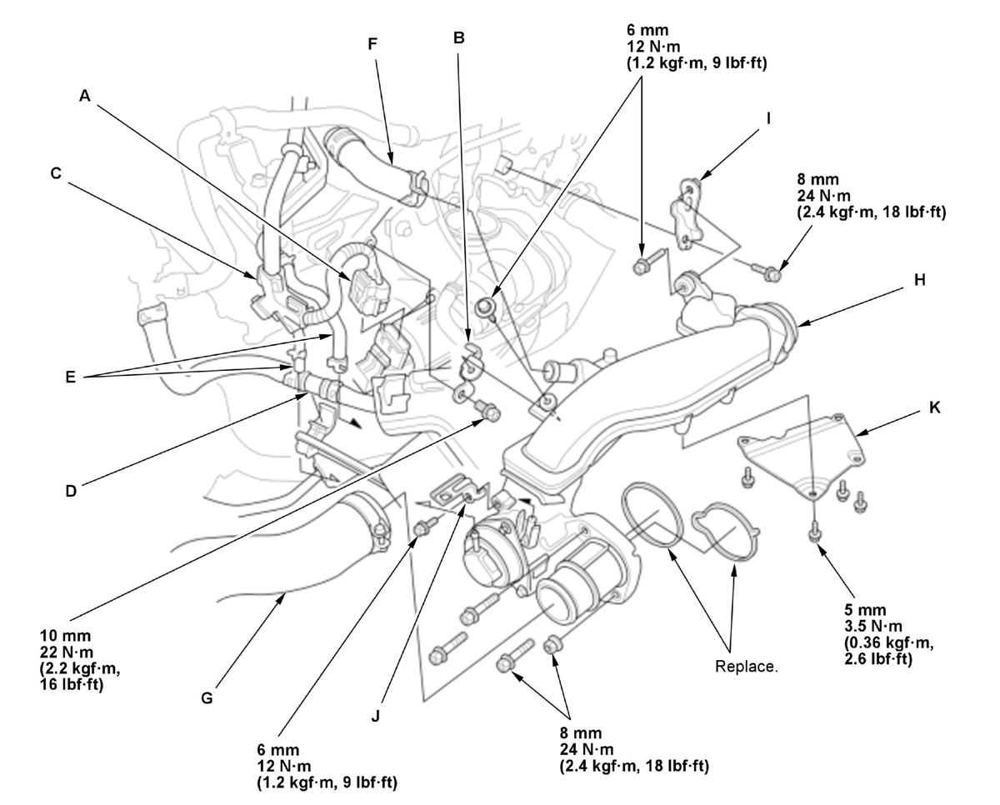
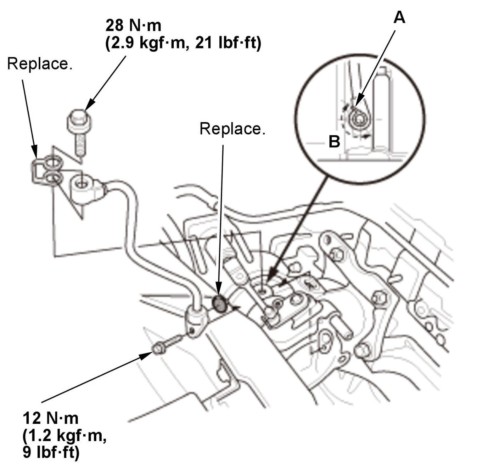
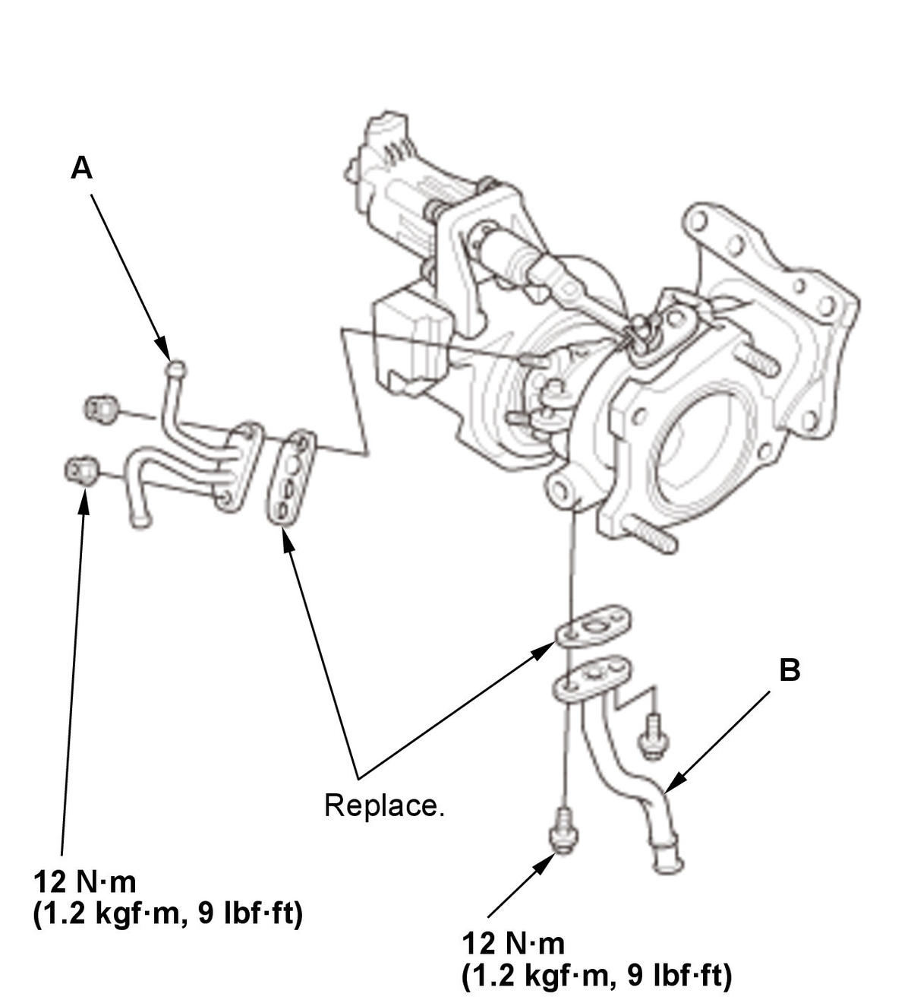
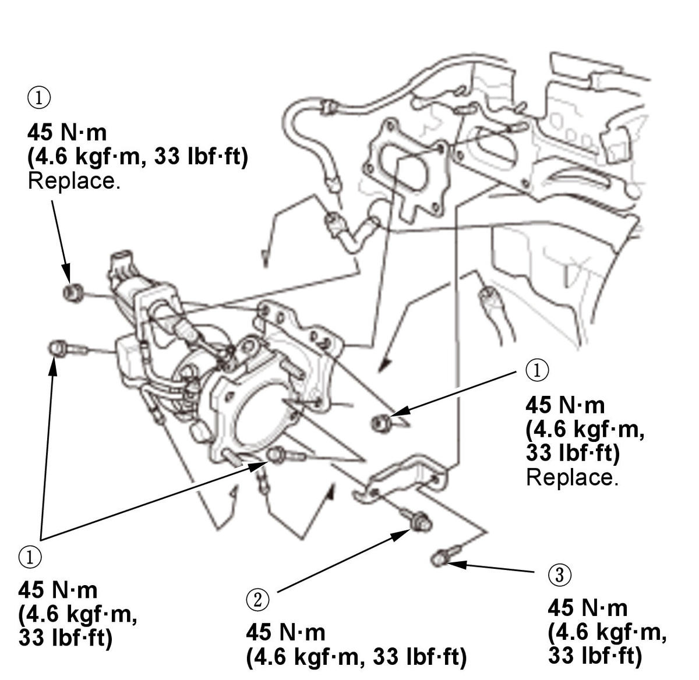

Removal and Installation
NOTE: Refer to the Exploded View if needed during this procedure.
- Engine Coolant - Drain
- Intake Air Duct - Remove
NOTE: After installation, check the length of the bands as shown.
- EVAP Canister Purge Nozzle - Remove
- Turbocharger Joint - Remove
1. Disconnect the connector (A).

Courtesy of HONDA, U.S.A., INC.2. Remove the harness holder (C) and the hose joint (D).
3. Disconnect the hoses (E), the breather hose (F), and intake air duct G.
4. Remove the turbocharger joint (H).
5. If necessary, remove the turbocharger joint bracket (I), turbocharger joint bracket B, the harness clamp bracket (J), and the turbocharger joint heat insulator (K).
- A/F Sensor - Remove
- TWC Assembly - Remove
- Turbocharger Cover - Remove
- Oil Feed Pipe - Remove

Courtesy of HONDA, U.S.A., INC.NOTE: After installation, make sure the washer portion (A) is installed on the area (B) as shown.
- Turbocharger and Bracket - Remove
1. Disconnect the water inlet hose (A), the water outlet hose (B), and the oil return hose (C). 2. Remove the bracket (D) and the turbocharger (E).
NOTE: Do not hold the wastegate control valve rod (F) and the turbocharger wastegate control actuator (G).
- Water Pipe and Oil Return Pipe - Remove

Courtesy of HONDA, U.S.A., INC.1. Remove the water pipe (A) and the oil return pipe (B). - All Removed Parts - Install

Courtesy of HONDA, U.S.A., INC.1. Install the parts in the reverse order of removal.
NOTE: Tighten the turbocharger/bracket mounting bolts and nuts in the numbered sequence shown. - Engine Oil Level - Check
Procedure After Replacing Turbocharger
- PCM - Reset
- PCM Idle - Learn